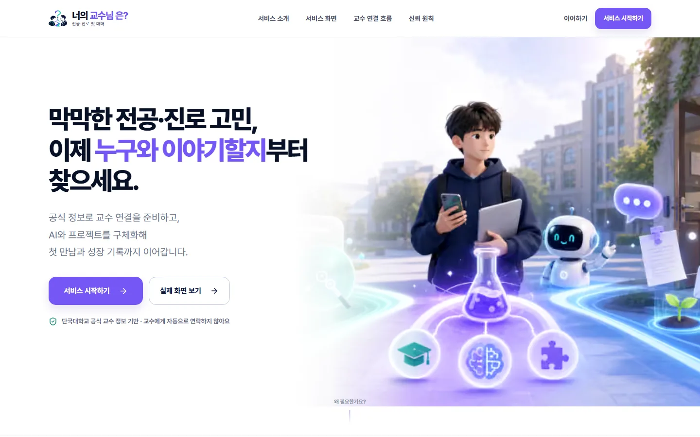
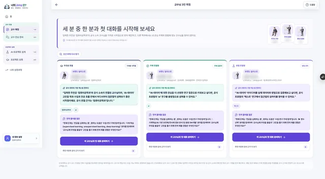
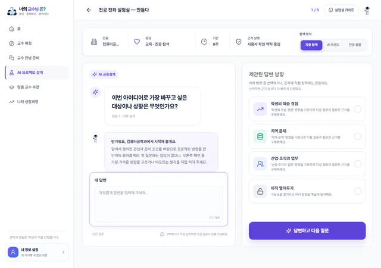
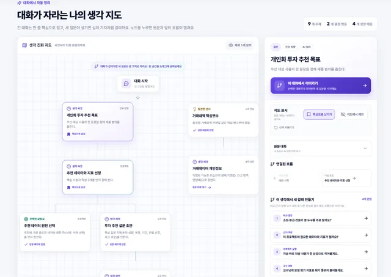
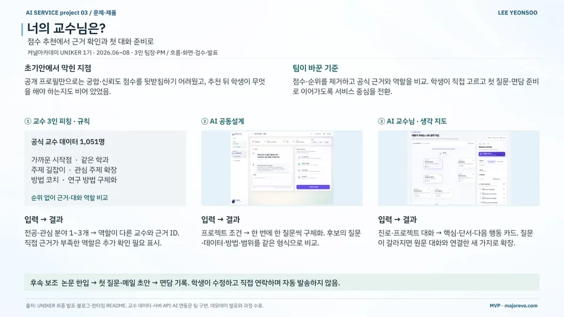
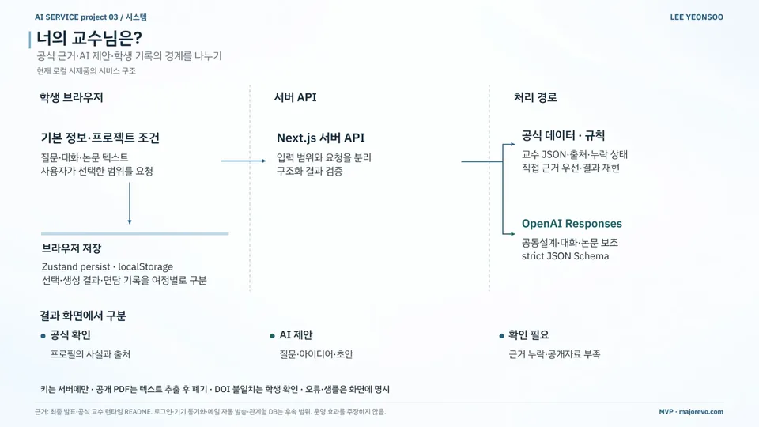
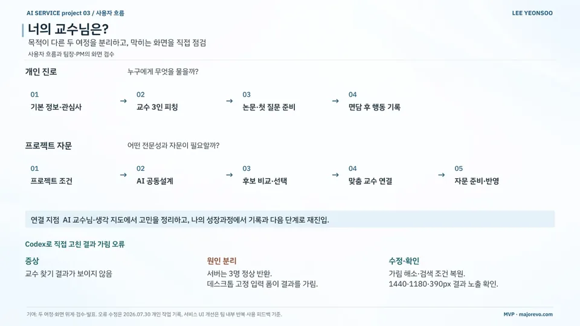

AI 서비스 기획 / MVP 구현 / 교육
너의 교수님은?
Your Professor? — From Search to a First Conversation
공식 교수 정보로 탐색부터 첫 대화 준비까지 돕는 팀 MVP
현재 상태팀 MVP 공개 배포
- 기간
- 2026.06–08 (커널아카데미 UNIKER 1기)
- 팀
- 팀 트리온 (3인)
- 내 역할
- 팀장·PM · 흐름·화면·검수·발표
- 도구
- 수상
- —
내 기여팀장·PM으로 문제를 재정의하고 기능 우선순위, 진로·자문 여정과 화면 위계, PC·모바일 검수, 데모 시나리오와 최종 발표를 맡았습니다. 교수 데이터·서버 API·AI 연동은 팀이 구현했습니다.
사진·화면


크게 보기
크게 보기교수님 3인 피칭: 주전공·주제·방법 연결형 후보를 공식 근거와 함께 비교(교수명 가림)출처네이버 블로그 (새 창) 
크게 보기AI 프로젝트 공동설계: 한 번에 한 질문씩 프로젝트 범위를 좁히는 화면출처팀 자료 
크게 보기AI 교수님 대화를 정리한 '대화가 자라는 나의 생각 지도'출처네이버 블로그 (새 창)


발표 자료

크게 보기포트폴리오 슬라이드 8쪽 · 본문 내용을 한 장으로 정리한 슬라이드 
크게 보기포트폴리오 슬라이드 9쪽 · 본문 내용을 한 장으로 정리한 슬라이드 
크게 보기포트폴리오 슬라이드 10쪽 · 본문 내용을 한 장으로 정리한 슬라이드


문제
교수 정보를 찾아도 누구에게 어떤 질문으로 연락할지 정하기 어렵습니다. 초기안의 궁합·신뢰도 점수는 공개 프로필만으로 설명하기 어려웠습니다.
접근
- 점수·순위 대신 공식 근거와 역할로 비교: 가까운 시작점·주제 길잡이·방법 코치
- 교수 3인 피칭·AI 공동설계·AI 교수님과 생각 지도의 핵심 기능 3종 설계
- 논문 한입·첫 질문·메일 초안·면담 기록 지원, 학생이 직접 수정·연락
- 목적이 다른 두 여정 분리: 개인 진로(4단계) / 프로젝트 자문(5단계)
- Next.js 서버 API에서 입력 범위와 요청을 분리하고 OpenAI Responses + strict JSON Schema로 구조화 결과 검증
핵심 판단
멘토링 뒤 0~100점 점수와 궁합도를 버리고 공식 근거 중심으로 MVP를 다시 설계
결과를 '공식 확인 / AI 제안 / 확인 필요'로 구분하고 근거가 부족한 역할은 '확인 필요'로 표시
기능 추가보다 홈의 첫 행동 단순화와 성장 기록 기본 비공개 설정을 우선 적용
API 키는 서버에만 두고, 공개 PDF는 텍스트 추출 후 폐기
결과
- 공식 교수 데이터1,051명단국대 115개 학과·전공 · 공식 프로필 기준
- 자동 테스트96/96TypeScript 검사·프로덕션 빌드 함께 통과
- 검수한 화면 폭1440·1180·390px결과 가림 오류 수정
- 단국대 115개 학과·전공, 교수 1,051명의 공식 프로필을 정규화한 팀 데이터(자료 연결 공백 3곳 표시)
- 자동 테스트 96/96·TypeScript 검사·프로덕션 빌드·발표 경로 4개 QA 통과(2026.08.28)
- Codex로 고정 입력 폼의 결과 가림 오류 수정, 1440·1180·390px 화면에서 점검(2026.07.30)
- 팀 MVP(majorevo.com) 공개 배포 · 데모데이 발표 · UNIKER 1기 수료
AI 활용
OpenAI Responses API와 strict JSON Schema로 공동설계·대화·논문 보조 결과를 구조화하고, 화면에서 공식 근거와 AI 제안을 구분합니다. 개발 중에는 Codex로 결과 가림 오류를 진단·수정했습니다.
한계와 다음 단계
외부 대학생의 완료율·행동 변화, 추천 정확도, 면담 성사는 아직 측정하지 않았습니다. 로그인·기기 동기화·메일 자동 발송·관계형 DB는 다음 단계입니다.